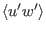
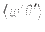
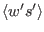
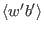

Next: Introduction Up: html Previous: Convective adjustment Contents
To close the differential equations for momentum, heat, and salt, parameterisations of the turbulent fluxes of momentum, , heat , and salinity  are required. Since turbulence `feels' the effects of temperature and salinity fluctuations essentially through buoyancy fluctuations, only the buoyancy flux, , is discussed in the following. The assumptions under which one can infer the fluxes of heat and salinity from the buoyancy flux are addressed below.